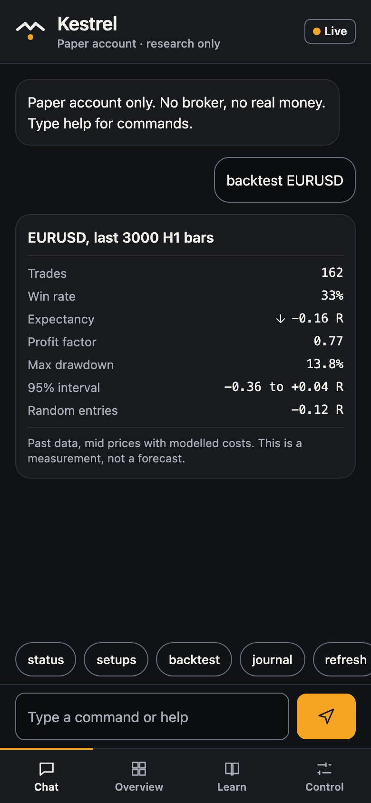
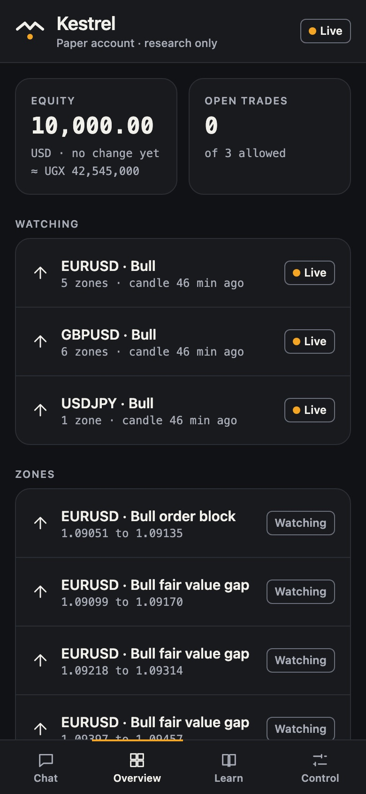
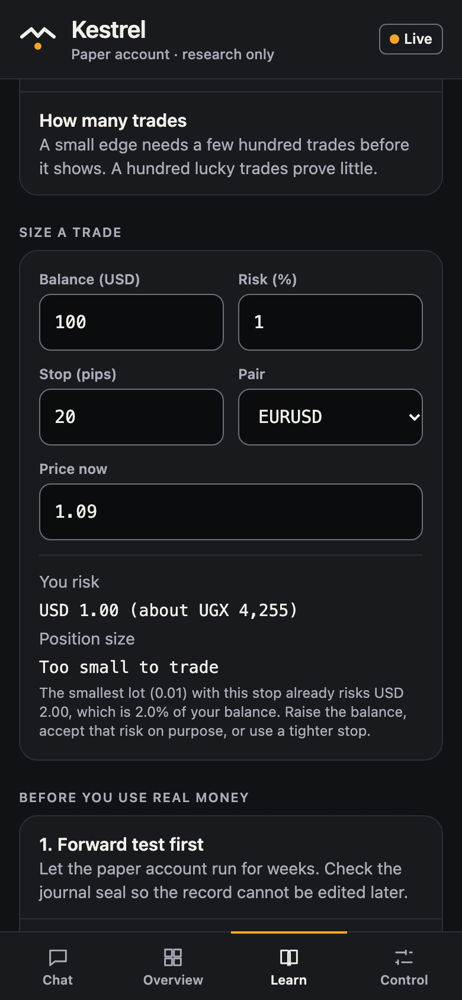
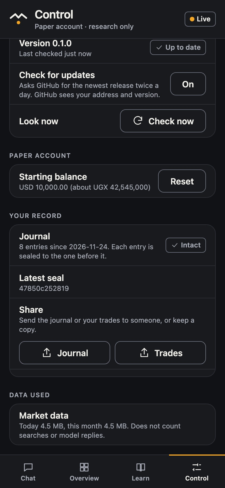
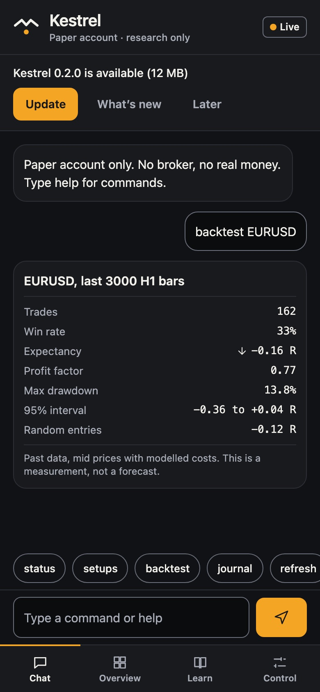

Ask it.
Type a command or tap a shortcut. A backtest comes back as a small table, next to what random entries would have done.

A forex research instrument that runs on your phone and tells you the truth about a trading idea.
Download for AndroidFree, open source, paper trading only.
Industry estimates put the share of retail traders who lose at 70 to 80 percent. Retail online forex has no dedicated licensing regime in Uganda that we could confirm, most traders use foreign brokers, and fixed-return schemes have taken people's savings.
So the first question is not which strategy to trade. It is whether the idea works at all, found out before a shilling is at risk.
Kestrel runs as a service on your phone, around the clock, with no server to rent and no account to open. It reads each hourly candle as it closes, writes down what it sees, and tries the idea on a paper account.
You wake up to a record, not a guess.
A sample night in Kampala time. The format and the seals are real. The trades are an illustration.
Then we pointed it at our own strategy.
-0.16 R
Average result per trade, EURUSD, 3,000 hourly bars, modelled spread, slippage and swap.
No edge. That is the answer Kestrel exists to give, even when it is the one you did not want.
One pair, one window, one set of rules, the day this was captured. A measurement of this rule set, not a verdict on smart money concepts. The detectors cannot see the future: a test replays every prefix of the data and checks.
Every entry is sealed with a hash of the entry before it. Change one old entry and every seal after it stops matching. Note the latest seal somewhere you trust, and later you can show nothing before it was rewritten.
seal = SHA-256 of the previous seal, the time, the kind and the text, joined with |
Type a command or tap a shortcut. A backtest comes back as a small table, next to what random entries would have done.

Your paper balance, what each pair is doing, and the zones it is waiting on. Everything is sized for a small screen.

The trade-size calculator tells you plainly when an account is too small for a trade, in dollars and shillings.

The journal shows whether it is intact, gives you the latest seal, and shares the record or your trades with anyone you choose.

Kestrel checks for a new version twice a day, and you can switch that off. A new version waits for Wi-Fi by default, because it is a big download on mobile data.
The file is checked against its published checksum, then Android confirms the install and refuses anything not signed with the same key. Nothing installs without your tap.
Checking asks GitHub for the newest release. GitHub sees your address and version, like any website.

Android 9 or newer. Free under the MIT licence, with no account and no analytics. The code is open to read.
The latest release
Check the download: SHA256SUMS from the same release.
Download Kestrel for Android Read the sourceKestrel is research software and places no real orders. Nothing here is financial advice. Trading leveraged products carries a high risk of loss, and past results, including a backtest, do not predict future ones. Market data comes from an unofficial public source that can change without notice.